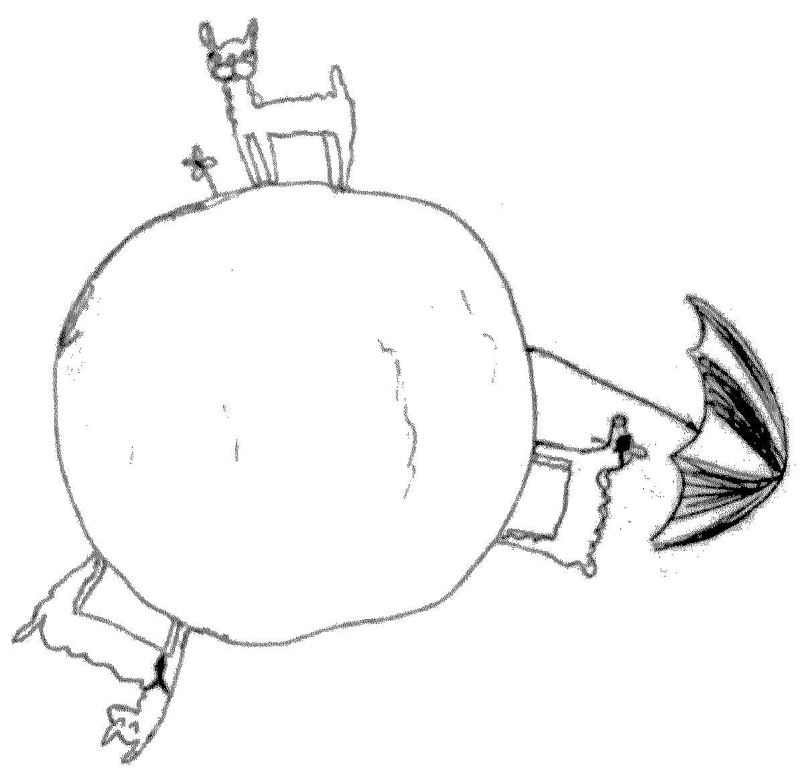

| Instructor: | Dr. Sebastián Barbieri |
| Email: | |
| Office Hours: | Monday 14:10-:16:30 at LSK300B |
| Lectures: | Monday, Wednesday and Friday 11:00-12:00. location: Buchannan-A102 |
We shall be using canvas. Information about textbooks, the topics, the marking scheme, and policies can be found in the course outline described the common course canvas site.
There shall be weekly webwork. Check the information in the common canvas website.
Grade change requests: Any requests to reconsider grades (homework, midterm, etc) should include the regrade request form.
Email sent without "104" in the subject is very likely to be ignored.
You are encouraged to do lots of problems, this is the best way to learn the subject.
This page layout has been shamelessly copied from here, with the consent of its author.
Copyright © 2018 Sebastián Barbieri.
Copyright © 2016-2017 Colin Macdonald.
Copyright © 2014-2015 Gord Slade and others.
Verbatim copying and distribution of this webpage is permitted
in any medium, provided this notice is preserved.
However, reproducing some content may require additional permission
from their respective authors.